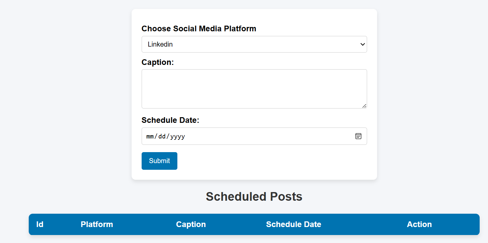
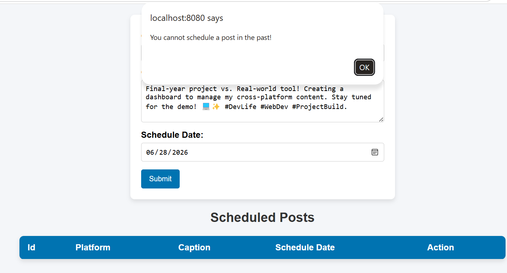
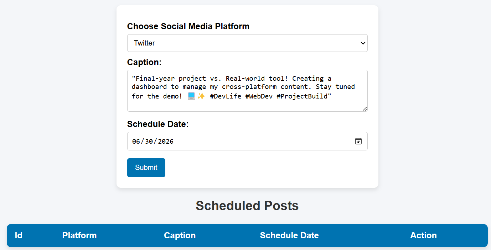
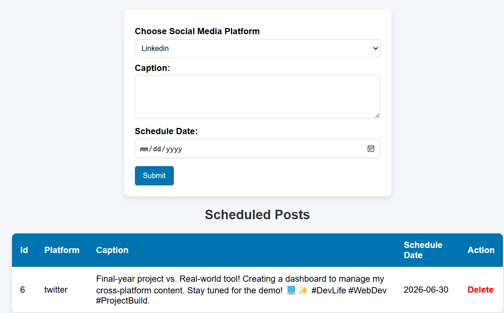
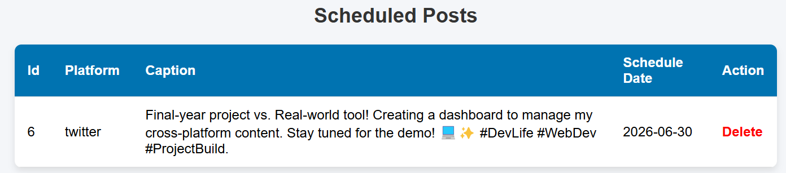

Name - Tarini Yadav
Summary:
Hello! I’m Tarini, a recent BCA graduate with a strong passion for frontend web development. 💻✨ I specialize in building clean, interactive, and mobile-friendly user interfaces using HTML, CSS, and JavaScript. I enjoy combining my technical background with a creative eye for social media design, leveraging tools like Canva to craft engaging visual experiences. 🎨📱 I am always eager to apply my problem-solving skills to real-world projects and continue growing as a developer. Let’s connect! 🚀
Education:
- Bachelor of Computer Application | Anant College Raigarh Chhattisgarh
- Affiliated with Shaheed Nandkumar Patel University
- Duration: Aug '2023 - August '2026
Technical Skills:
Programming & Core Concepts:
- Core Java
- Tomcat 9
- Servlet
- JDBC
- MySQL
- C++
- DSA
- Operating System
- Software Engineering
Web Development:
- Html
- CSS
- Javascript
Creative Skills:
- Social Media Designing - Canva
Projects:
Project Name - [SocialMediaPlanner]
Overview: Developed a robust and scalable SocialMediaPlanner, a full-stack web application designed to streamline social media management. This project addresses the core challenge of fragmented content planning by providing a centralized dashboard for scheduling, organizing, and managing cross-platform content.
The Vision: I observed that individuals and small teams often struggle to maintain consistency across multiple social media channels, leading to inefficient workflows and missed engagement opportunities. The vision behind SocialMediaPlanner was to eliminate this friction by creating an intuitive, all-in-one productivity tool. My goal was to empower users to manage their entire content lifecycle from media organization to automated scheduling and performance tracking—within a single, unified interface.
Tech Stack: Java | Servlets | JDBC | Tomcat 9 | MySQL | HTML5 | CSS | JavaScript.

Caption: User Interface Design: A clean and intuitive dashboard for scheduling social media posts efficiently.

Caption: Input Validation: Implementing logical checks to ensure data integrity by restricting invalid entries like past-date scheduling.

Caption: Content Submission: Demonstrating the scheduling process by inputting post details for future-dated publication.

Caption: Integrated Content Dashboard: A centralized view for scheduling new posts and managing existing entries via a database-linked table.

Caption: Data Management: Viewing scheduled posts with real-time options to delete entries from the database.
Key Features:
- Content Scheduling Dashboard: A user-friendly interface that allows users to create and schedule posts for specific dates and times.
- Multi-Platform Integration: Support for managing and previewing content across different social media platforms from a single location.
- Media Management System: An intuitive way for users to upload, store, and organize images or videos to be used in their social media posts.
- Analytics Overview: A feature that tracks engagement metrics, helping users understand which posts perform best with their audience.
- Post Previewer: A functional UI component that shows users exactly how their post will look before it is officially published.